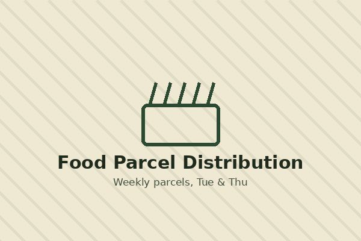
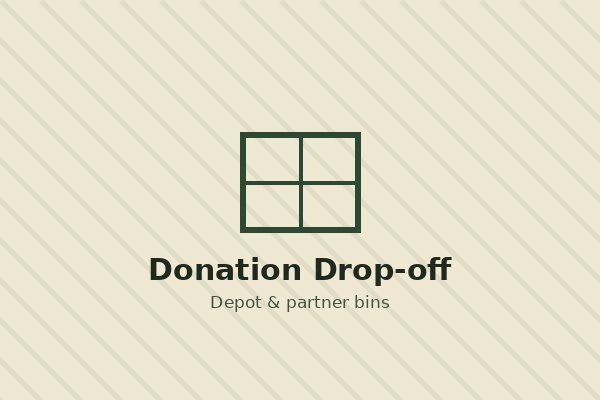

Our services
GreenLeaf runs three core services, all volunteer-run and funded by donations.
1. Weekly food parcel distribution

Pre-packed parcels of staples such as rice, oil, and canned goods, plus seasonal fresh produce when available, are handed out weekly at three community sites.
| Day | Time | Location |
|---|---|---|
| Tuesday | 09:00 - 12:00 | Ubuntu Community Hall, Alexandra |
| Thursday | 14:00 - 17:00 | Riverside Church Hall, Diepsloot |
2. Weekend soup kitchen
A hot, sit-down meal open to anyone who needs one, run entirely by local volunteers out of the GreenLeaf depot hall.
| Day | Time | Location |
|---|---|---|
| Saturday | 10:00 - 13:00 | GreenLeaf Depot, Randburg |
| Sunday | 10:00 - 13:00 | GreenLeaf Depot, Randburg |
3. Donation drop-off & collection

Drop food off at the depot or a partner collection bin, or arrange a recurring pickup. Ideal for restaurants, grocers, and offices with regular surplus food.
- Depot drop-off: Monday to Friday, 08:00 - 17:00
- Partner bins at six local supermarkets
- Scheduled business pickups on request
Who we help
Our services are available to any family or individual in the local area facing food insecurity. No proof of income is required for a first visit.